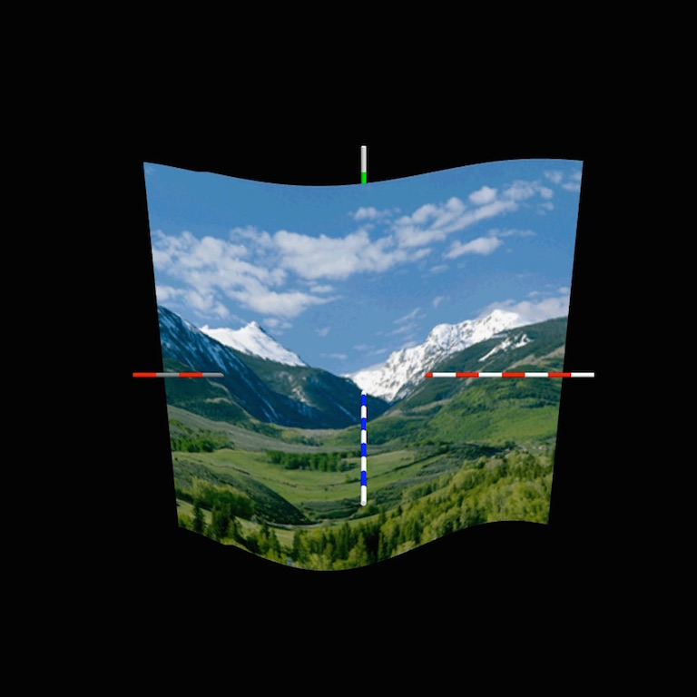

NeHe and Three.js
These are the next 8 lessons in the NeHe tutorials. Just click on the thumbnail image to go to the lesson itself.
Lesson 9 Introduction to alpha masking with textures. |
|
Lesson 10 A simple demonstration of loading a user-defined model and mapping textures on to it. |
|
|  | Lesson 11 Animating a shape with parametric surfaces. |
Lesson 12 Nothing here as leson 12 is about display lists which are implicit in three.js |
|
Lesson 13 Using 2D canvas and sprites to create useful labels in 3D |
|
Lesson 14 Using outline fonts and extruding shapes into 3D |
|
Lesson 15 Texturing outline fonts as well as an introduction to shaders. |
|
Lesson 16 Brief introduction to fog |